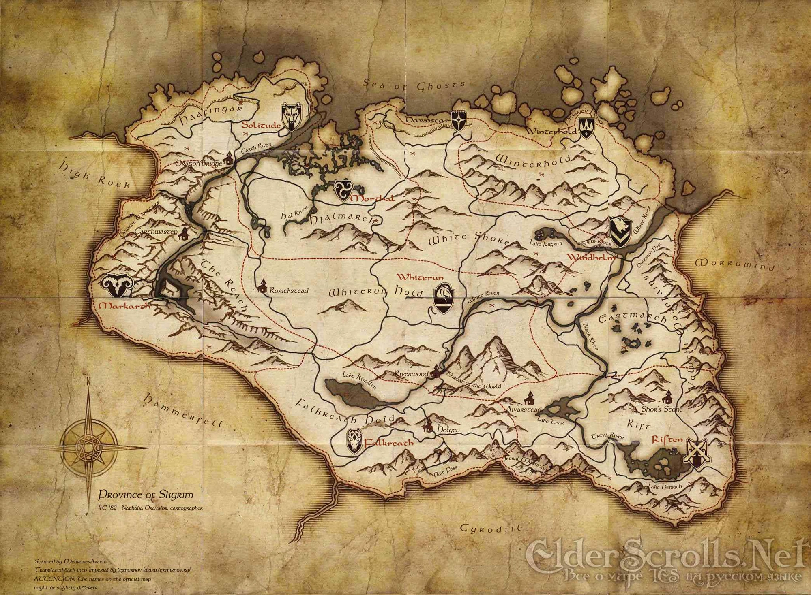

Skyrim is the northernmost province of Tamriel — a harsh and breathtaking land of towering mountains, frozen tundras, and ancient Nordic ruins. It is a place where legends are born and where dragons once ruled the skies.
Whiterun — The heart of Skyrim, located in vast plains. Known for Dragonsreach and its central role in trade.
Solitude — The capital city, built on a natural stone arch. Political center of the Empire.
Windhelm — The oldest city in Skyrim. Cold, stone-built, and home to the Stormcloaks.
Riften — A city of canals and corruption, home to the Thieves Guild.
Markarth — Built inside Dwemer ruins, known for its stone architecture and dark secrets.
Winterhold — A ruined city, mostly destroyed, but home to the College of Winterhold.
Falkreath — Surrounded by forests and graveyards, quiet and mysterious.
Morthal — A foggy swamp town, filled with dark legends.
Dawnstar — A northern port city plagued by nightmares.